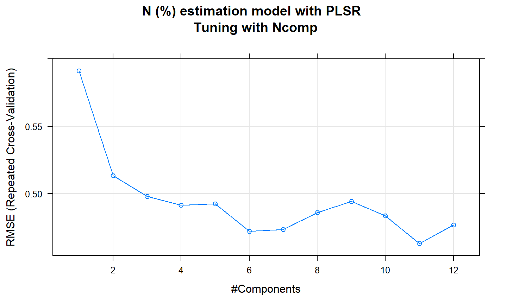
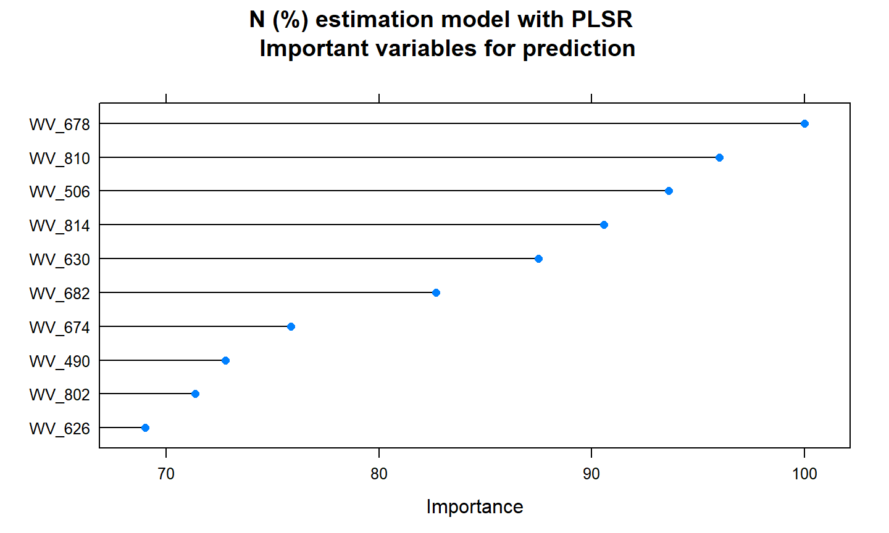
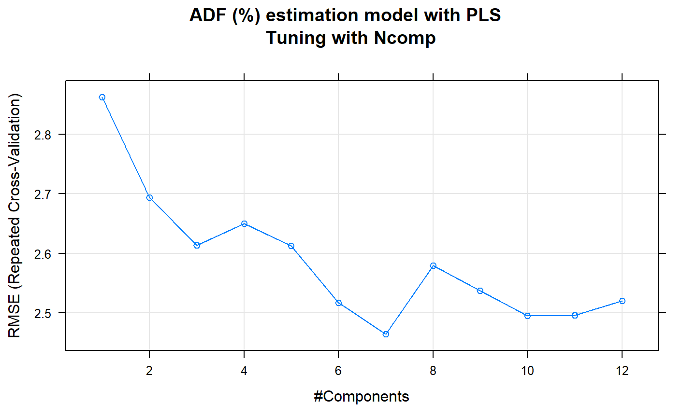
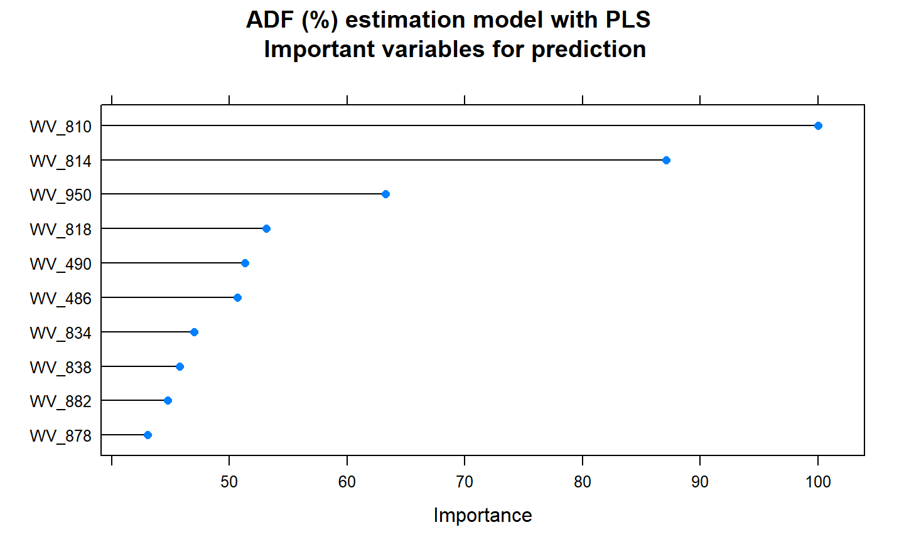
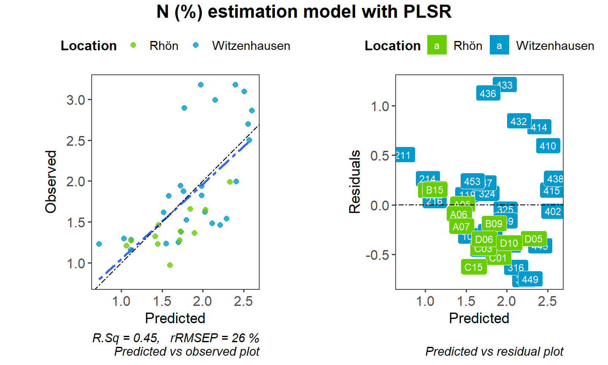
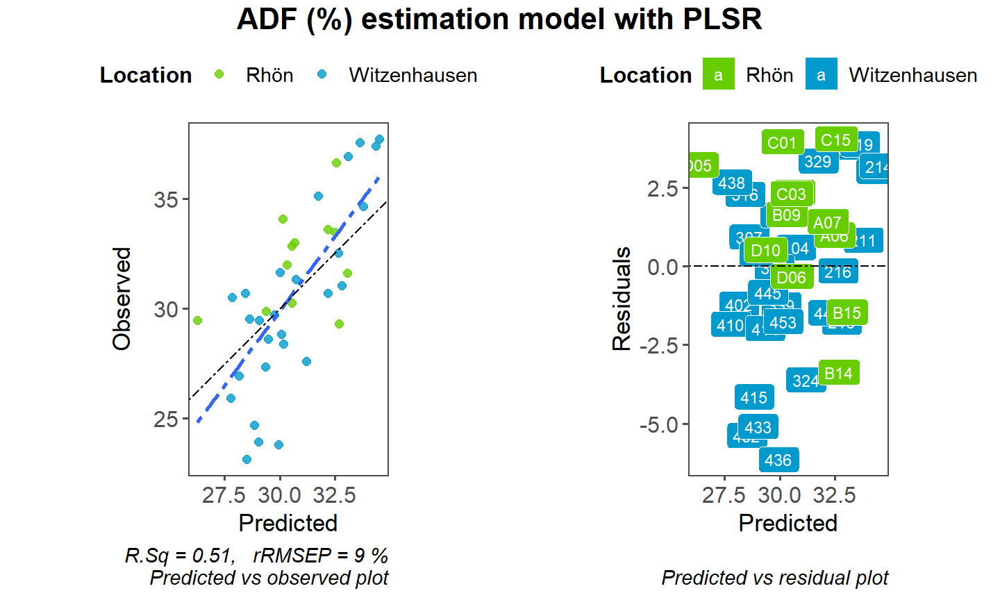

g1 g2 g3 g4 BG BGL GH GHL 20 19 35 60 15 15 15 15
g1 g2 g3 g4 BG BGL GH GHL 16 15 28 48 12 12 12 12
g1 g2 g3 g4 BG BGL GH GHL
4 4 7 12 3 3 3 3
15 February, 2019
g1 g2 g3 g4 BG BGL GH GHL 20 19 35 60 15 15 15 15
g1 g2 g3 g4 BG BGL GH GHL 16 15 28 48 12 12 12 12
g1 g2 g3 g4 BG BGL GH GHL
4 4 7 12 3 3 3 3



RMSE Rsquared MAE 0.4734816 0.4530288 0.3761371

RMSE Rsquared MAE 2.7342906 0.5140647 2.2754381
